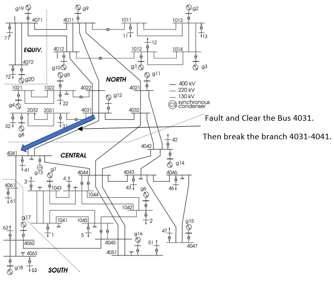
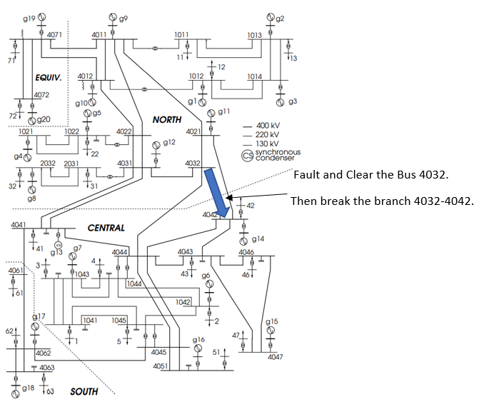
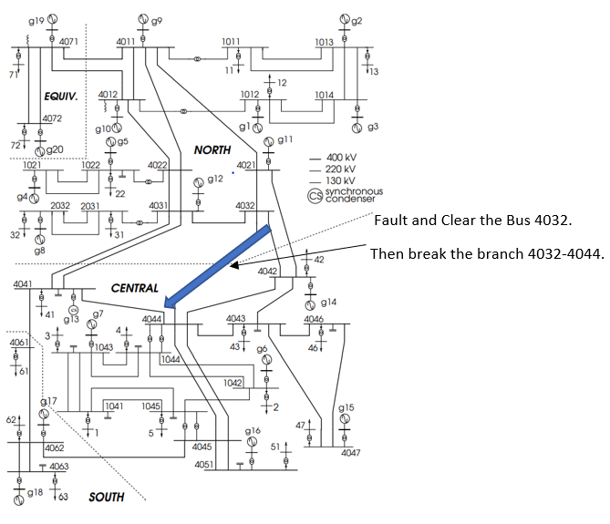

The image besides the video shows the position of disconnected line. Please make a speculation based on the
observation of the Video whether the system will have a blackout and when will the blackout occur if happen.
You can check the correct answer by clicking the gray box as well as rolling down the HTML file at the right side.
Case one
Action: Break the transmission line 4031-4041.

Please click me to find the explanation.
Result in simulating system: An error occurred in Updating No.188.
Result in Graph one: Voltage collapse in Central part.
Result in Graph two: Color changing pattern appears in Updating No.155-No.167.
Case two
Action: Break the transmission line 4032-4042.

Please click me to find the explanation.
Result in simulating system: No error occurred.
Result in Graph one: No Voltage collapse.
Result in Graph two: No Color changing pattern.
Case three
Action: Break the transmission line 4032-4044.

Please click me to find the explanation.
Result in simulating system: An error occurred in Updating No.168.
Result in Graph one: Voltage collapse in Central part.
Result in Graph two: Color changing pattern appears in Updating No.109-No.115 and Updating No.163-No.167.
Some Questions
Consider some questions after the animation watching
Q1: Which part is the most vulnerable part in the nordic 32 test system? Equiv, North, Central or South.
Q2: Which part is the comsuming part(The total power consuming is greater then the power generating) and which part is the generating part?
Q3: Did you find the color changing difference between the three cases mentioned above?